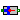
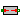
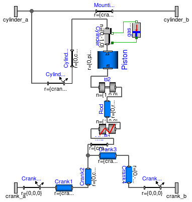
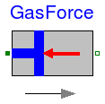
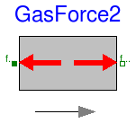
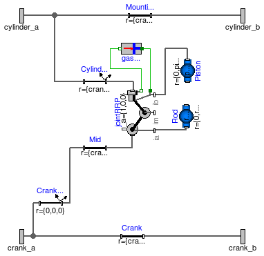
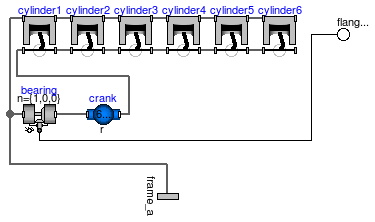
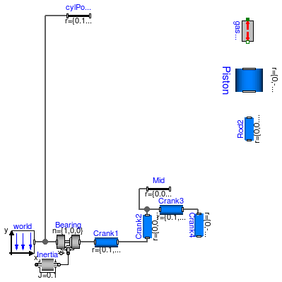
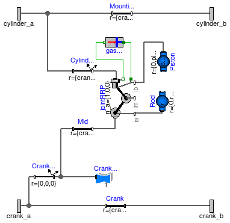

| Name | Description |
|---|---|
| Cylinder | Cylinder with rod and crank of a combustion engine |
|  GasForce | Simple gas force computation for combustion engine |
|  GasForce2 | Rough approximation of gas force in a cylinder |
| CylinderBase | One cylinder with analytic handling of kinematic loop |
| Cylinder_analytic_CAD | One cylinder with analytic handling of kinematic loop and CAD visualization |
| EngineV6_analytic | V6 engine with analytic loop handling |
| Model of one cylinder engine with gas force |

| Type | Name | Default | Description |
|---|---|---|---|
| Boolean | animation | true | = true, if animation shall be enabled |
| Length | cylinderTopPosition | 0.42 | Length from crank shaft to end of cylinder. [m] |
| Length | pistonLength | 0.1 | Length of cylinder [m] |
| Length | rodLength | 0.2 | Length of rod [m] |
| Length | crankLength | 0.2 | Length of crank shaft in x direction [m] |
| Length | crankPinOffset | 0.1 | Offset of crank pin from center axis [m] |
| Length | crankPinLength | 0.1 | Offset of crank pin from center axis [m] |
| Angle | cylinderInclination | 0 | Inclination of cylinder [rad] |
| Angle | crankAngleOffset | 0 | Offset for crank angle [rad] |
| Length | cylinderLength | cylinderTopPosition - (pisto... | Maximum length of cylinder volume [m] |
| Type | Name | Description |
|---|---|---|
| Frame_a | cylinder_a | |
| Frame_a | cylinder_b | |
| Frame_a | crank_a | |
| Frame_a | crank_b |
model Cylinder "Cylinder with rod and crank of a combustion engine"
import SI = Modelica.SIunits;
parameter Boolean animation=true "= true, if animation shall be enabled";
parameter SI.Length cylinderTopPosition=0.42
"Length from crank shaft to end of cylinder.";
parameter SI.Length pistonLength=0.1 "Length of cylinder";
parameter SI.Length rodLength=0.2 "Length of rod";
parameter SI.Length crankLength=0.2 "Length of crank shaft in x direction";
parameter SI.Length crankPinOffset=0.1 "Offset of crank pin from center axis";
parameter SI.Length crankPinLength=0.1 "Offset of crank pin from center axis";
parameter SI.Angle cylinderInclination=0 "Inclination of cylinder";
parameter SI.Angle crankAngleOffset=0 "Offset for crank angle";
parameter SI.Length cylinderLength=cylinderTopPosition - (pistonLength +
rodLength - crankPinOffset) "Maximum length of cylinder volume";
Modelica.Mechanics.MultiBody.Parts.BodyCylinder Piston(
diameter=0.1,
r={0,pistonLength,0},
color={180,180,180},
animation=animation);
Modelica.Mechanics.MultiBody.Parts.BodyBox Rod(
widthDirection={1,0,0},
height=0.06,
color={0,0,200},
width=0.02,
r_shape={0,-0.02,0},
r={0,rodLength,0},
animation=animation);
Modelica.Mechanics.MultiBody.Joints.Revolute B2(
n={1,0,0},
cylinderLength=0.02,
animation=animation,
cylinderDiameter=0.055);
Modelica.Mechanics.MultiBody.Parts.BodyBox Crank4(
height=0.05,
widthDirection={1,0,0},
width=0.02,
r={0,-crankPinOffset,0},
animation=animation);
Modelica.Mechanics.MultiBody.Parts.BodyCylinder Crank3(
r_shape={-0.01,0,0},
length=0.12,
diameter=0.03,
r={crankPinLength,0,0},
color={180,180,180},
animation=animation);
Modelica.Mechanics.MultiBody.Parts.BodyCylinder Crank1(
diameter=0.05,
r_shape={-0.01,0,0},
length=0.12,
r={crankLength - crankPinLength,0,0},
color={180,180,180},
animation=animation);
Modelica.Mechanics.MultiBody.Parts.BodyBox Crank2(
height=0.05,
widthDirection={1,0,0},
width=0.02,
r={0,crankPinOffset,0},
animation=animation);
Joints.RevolutePlanarLoopConstraint B1(
n={1,0,0},
cylinderLength=0.02,
animation=animation,
cylinderDiameter=0.055);
Modelica.Mechanics.MultiBody.Parts.FixedTranslation Mid(r={crankPinLength/2,0,0}, animation=
false);
Modelica.Mechanics.MultiBody.Joints.Prismatic Cylinder(useAxisFlange=true,
s(start=-0.3),
n={0,-1,0},
boxWidth=0.02);
Modelica.Mechanics.MultiBody.Parts.FixedTranslation Mounting(r={crankLength,0,0}, animation=
false);
Modelica.Mechanics.MultiBody.Parts.FixedRotation CylinderInclination(
r={crankLength - crankPinLength/2,0,0},
n_y={0,cos(cylinderInclination),sin(cylinderInclination)},
animation=false,
rotationType=Modelica.Mechanics.MultiBody.Types.RotationTypes.TwoAxesVectors);
Modelica.Mechanics.MultiBody.Parts.FixedRotation CrankAngle1(
n_y={0,cos(crankAngleOffset),sin(crankAngleOffset)},
animation=false,
rotationType=Modelica.Mechanics.MultiBody.Types.RotationTypes.TwoAxesVectors);
Modelica.Mechanics.MultiBody.Parts.FixedRotation CrankAngle2(
n_y={0,cos(-crankAngleOffset),sin(-crankAngleOffset)},
animation=false,
rotationType=Modelica.Mechanics.MultiBody.Types.RotationTypes.TwoAxesVectors);
Modelica.Mechanics.MultiBody.Parts.FixedTranslation CylinderTop(r={0,cylinderTopPosition,0},
animation=false);
GasForce gasForce(L=cylinderLength, d=0.1);
Interfaces.Frame_a cylinder_a;
Interfaces.Frame_a cylinder_b;
Interfaces.Frame_a crank_a;
Interfaces.Frame_a crank_b;
equation
connect(B1.frame_a, Mid.frame_b);
connect(Rod.frame_a, B1.frame_b);
connect(Cylinder.frame_b, Piston.frame_b);
connect(Crank1.frame_a, CrankAngle1.frame_b);
connect(B2.frame_a, Piston.frame_a);
connect(Rod.frame_b, B2.frame_b);
connect(Crank4.frame_b, CrankAngle2.frame_a);
connect(Cylinder.support, gasForce.flange_b);
connect(Cylinder.axis, gasForce.flange_a);
connect(CylinderInclination.frame_b, CylinderTop.frame_a);
connect(Crank1.frame_b, Crank2.frame_a);
connect(Crank3.frame_b, Crank4.frame_a);
connect(Crank3.frame_a, Crank2.frame_b);
connect(Crank2.frame_b, Mid.frame_a);
connect(CylinderTop.frame_b, Cylinder.frame_a);
connect(CylinderInclination.frame_a, cylinder_a);
connect(Mounting.frame_a, cylinder_a);
connect(Mounting.frame_b, cylinder_b);
connect(CrankAngle1.frame_a, crank_a);
connect(CrankAngle2.frame_b, crank_b);
end Cylinder;
 Modelica.Mechanics.MultiBody.Examples.Loops.Utilities.GasForce
Modelica.Mechanics.MultiBody.Examples.Loops.Utilities.GasForce
| Type | Name | Default | Description |
|---|---|---|---|
| Length | L | Length of cylinder [m] | |
| Diameter | d | Diameter of cylinder [m] | |
| Volume | k0 | 0.01 | Volume V = k0 + k1*(1-x), with x = 1 + s_rel/L [m3] |
| Volume | k1 | 1 | Volume V = k0 + k1*(1-x), with x = 1 + s_rel/L [m3] |
| HeatCapacity | k | 1 | Gas constant (p*V = k*T) [J/K] |
| Initialization | |||
| Distance | s_rel.start | 0 | relative distance (= flange_b.s - flange_a.s) [m] |
| Type | Name | Description |
|---|---|---|
| Flange_a | flange_a | Left flange of compliant 1-dim. translational component |
| Flange_b | flange_b | Right flange of compliant 1-dim. translational component |
model GasForce "Simple gas force computation for combustion engine"
import SI = Modelica.SIunits;
extends Modelica.Mechanics.Translational.Interfaces.PartialCompliant;
parameter SI.Length L "Length of cylinder";
parameter SI.Diameter d "Diameter of cylinder";
parameter SIunits.Volume k0=0.01
"Volume V = k0 + k1*(1-x), with x = 1 + s_rel/L";
parameter SIunits.Volume k1=1
"Volume V = k0 + k1*(1-x), with x = 1 + s_rel/L";
parameter SIunits.HeatCapacity k=1 "Gas constant (p*V = k*T)";
constant Real pi=Modelica.Constants.pi;
// Only for compatibility reasons
Real x "Normalized position of cylinder";
Real y "Normalized relative movement (= -s_rel/L)";
SI.Density dens;
Modelica.SIunits.Conversions.NonSIunits.Pressure_bar press
"cylinder pressure";
SI.Volume V;
SI.Temperature T;
SI.Velocity v_rel;
protected
constant SI.Mass unitMass=1;
Modelica.SIunits.Pressure p;
equation
y = -s_rel/L;
x = 1 + s_rel/L;
v_rel = der(s_rel);
press = p/1e5;
p = (if v_rel < 0 then (if x < 0.987 then 177.4132*x^4 - 287.2189*x^3 +
151.8252*x^2 - 24.9973*x + 2.4 else 2836360*x^4 - 10569296*x^3 + 14761814
*x^2 - 9158505*x + 2129670) else (if x > 0.93 then -3929704*x^4 +
14748765*x^3 - 20747000*x^2 + 12964477*x - 3036495 else 145.930*x^4 -
131.707*x^3 + 17.3438*x^2 + 17.9272*x + 2.4))*1e5;
f = -1.0E5*press*pi*d^2/4;
V = k0 + k1*(1 - x);
dens = unitMass/V;
(p/1e5)*V = k*T;
end GasForce;

The gas force in a cylinder is computed as function of the relative distance of the two flanges. It is required that s_rel = flange_b.s - flange_a.s is in the range
0 ≤ s_rel ≤ L
where the parameter L is the length of the cylinder. If this assumption is not fulfilled, an error occurs.
Extends from Modelica.Mechanics.Translational.Interfaces.PartialCompliant (Compliant connection of two translational 1D flanges).
| Type | Name | Default | Description |
|---|---|---|---|
| Length | L | Length of cylinder [m] | |
| Length | d | diameter of cylinder [m] | |
| Volume | k0 | 0.01 | Volume V = k0 + k1*(1-x), with x = 1 - s_rel/L [m3] |
| Volume | k1 | 1 | Volume V = k0 + k1*(1-x), with x = 1 - s_rel/L [m3] |
| HeatCapacity | k | 1 | Gas constant (p*V = k*T) [J/K] |
| Initialization | |||
| Distance | s_rel.start | 0 | relative distance (= flange_b.s - flange_a.s) [m] |
| Type | Name | Description |
|---|---|---|
| Flange_a | flange_a | Left flange of compliant 1-dim. translational component |
| Flange_b | flange_b | Right flange of compliant 1-dim. translational component |
model GasForce2 "Rough approximation of gas force in a cylinder"
import SI = Modelica.SIunits;
extends Modelica.Mechanics.Translational.Interfaces.PartialCompliant;
parameter SI.Length L "Length of cylinder";
parameter SI.Length d "diameter of cylinder";
parameter SIunits.Volume k0=0.01
"Volume V = k0 + k1*(1-x), with x = 1 - s_rel/L";
parameter SIunits.Volume k1=1
"Volume V = k0 + k1*(1-x), with x = 1 - s_rel/L";
parameter SIunits.HeatCapacity k=1 "Gas constant (p*V = k*T)";
/*
parameter Real k0=0.01;
parameter Real k1=1;
parameter Real k=1;
*/
constant Real pi=Modelica.Constants.pi;
Real x "Normalized position of cylinder (= 1 - s_rel/L)";
SI.Density dens;
Modelica.SIunits.AbsolutePressure press "Cylinder pressure";
SI.Volume V;
SI.Temperature T;
SI.Velocity v_rel;
protected
Modelica.SIunits.SpecificHeatCapacity R_air = Modelica.Constants.R/0.0289651159;
equation
x = 1 - s_rel/L;
v_rel = der(s_rel);
press = 1.0E5*(if v_rel < 0 then (if x < 0.987 then 177.4132*x^4 - 287.2189*x^3 +
151.8252*x^2 - 24.9973*x + 2.4 else 2836360*x^4 - 10569296*x^3 + 14761814
*x^2 - 9158505*x + 2129670) else (if x > 0.93 then -3929704*x^4 +
14748765*x^3 - 20747000*x^2 + 12964477*x - 3036495 else 145.930*x^4 -
131.707*x^3 + 17.3438*x^2 + 17.9272*x + 2.4));
f = -press*pi*d^2/4;
V = k0 + k1*(1 - x);
dens = press/(R_air*T);
press*V = k*T;
assert(s_rel >= -1.e-12, "flange_b.s - flange_a.s (= " + String(s_rel) +
") >= 0 required for GasForce component.\n" +
"Most likely, the component has to be flipped.");
assert(s_rel <= L + 1.e-12, " flange_b.s - flange_a.s (= " + String(s_rel) +
" <= L (" + String(L) + ") required for GasForce component.\n" +
"Most likely, parameter L is not correct.");
end GasForce2;

| Type | Name | Default | Description |
|---|---|---|---|
| Boolean | animation | true | = true, if animation shall be enabled |
| Length | cylinderTopPosition | 0.42 | Length from crank shaft to end of cylinder. [m] |
| Length | crankLength | 0.14 | Length of crank shaft in x direction [m] |
| Length | crankPinOffset | 0.05 | Offset of crank pin from center axis [m] |
| Length | crankPinLength | 0.1 | Offset of crank pin from center axis [m] |
| Angle_deg | cylinderInclination | 0 | Inclination of cylinder [deg] |
| Angle_deg | crankAngleOffset | 0 | Offset for crank angle [deg] |
| Piston | |||
| Length | pistonLength | 0.1 | Length of cylinder [m] |
| Length | pistonCenterOfMass | pistonLength/2 | Distance from frame_a to center of mass of piston [m] |
| Mass | pistonMass | 6 | Mass of piston [kg] |
| Inertia | pistonInertia_11 | 0.0088 | Inertia 11 of piston with respect to center of mass frame, parallel to frame_a [kg.m2] |
| Inertia | pistonInertia_22 | 0.0076 | Inertia 22 of piston with respect to center of mass frame, parallel to frame_a [kg.m2] |
| Inertia | pistonInertia_33 | 0.0088 | Inertia 33 of piston with respect to center of mass frame, parallel to frame_a [kg.m2] |
| Rod | |||
| Length | rodLength | 0.175 | Length of rod [m] |
| Length | rodCenterOfMass | rodLength/2 | Distance from frame_a to center of mass of piston [m] |
| Mass | rodMass | 1 | Mass of rod [kg] |
| Inertia | rodInertia_11 | 0.006 | Inertia 11 of rod with respect to center of mass frame, parallel to frame_a [kg.m2] |
| Inertia | rodInertia_22 | 0.0005 | Inertia 22 of rod with respect to center of mass frame, parallel to frame_a [kg.m2] |
| Inertia | rodInertia_33 | 0.006 | Inertia 33 of rod with respect to center of mass frame, parallel to frame_a [kg.m2] |
| Type | Name | Description |
|---|---|---|
| Frame_a | cylinder_a | |
| Frame_a | cylinder_b | |
| Frame_a | crank_a | |
| Frame_a | crank_b |
model CylinderBase
"One cylinder with analytic handling of kinematic loop"
import SI = Modelica.SIunits;
import Cv = Modelica.SIunits.Conversions;
parameter Boolean animation=true "= true, if animation shall be enabled";
parameter SI.Length cylinderTopPosition=0.42
"Length from crank shaft to end of cylinder.";
parameter SI.Length crankLength=0.14 "Length of crank shaft in x direction";
parameter SI.Length crankPinOffset=0.05
"Offset of crank pin from center axis";
parameter SI.Length crankPinLength=0.1 "Offset of crank pin from center axis";
parameter Cv.NonSIunits.Angle_deg cylinderInclination=0
"Inclination of cylinder";
parameter Cv.NonSIunits.Angle_deg crankAngleOffset=0 "Offset for crank angle";
parameter SI.Length pistonLength=0.1 " Length of cylinder";
parameter SI.Length pistonCenterOfMass=pistonLength/2
" Distance from frame_a to center of mass of piston";
parameter SI.Mass pistonMass(min=0) = 6 " Mass of piston";
parameter SI.Inertia pistonInertia_11(min=0) = 0.0088
" Inertia 11 of piston with respect to center of mass frame, parallel to frame_a";
parameter SI.Inertia pistonInertia_22(min=0) = 0.0076
" Inertia 22 of piston with respect to center of mass frame, parallel to frame_a";
parameter SI.Inertia pistonInertia_33(min=0) = 0.0088
" Inertia 33 of piston with respect to center of mass frame, parallel to frame_a";
parameter SI.Length rodLength=0.175 " Length of rod";
parameter SI.Length rodCenterOfMass=rodLength/2
" Distance from frame_a to center of mass of piston";
parameter SI.Mass rodMass(min=0) = 1 " Mass of rod";
parameter SI.Inertia rodInertia_11(min=0) = 0.006
" Inertia 11 of rod with respect to center of mass frame, parallel to frame_a";
parameter SI.Inertia rodInertia_22(min=0) = 0.0005
" Inertia 22 of rod with respect to center of mass frame, parallel to frame_a";
parameter SI.Inertia rodInertia_33(min=0) = 0.006
" Inertia 33 of rod with respect to center of mass frame, parallel to frame_a";
final parameter SI.Length cylinderLength=cylinderTopPosition - (
pistonLength + rodLength - crankPinOffset)
"Maximum length of cylinder volume";
Modelica.Mechanics.MultiBody.Parts.FixedTranslation Mid(animation=false, r={crankLength -
crankPinLength/2,crankPinOffset,0});
Modelica.Mechanics.MultiBody.Parts.FixedTranslation Mounting(r={crankLength,0,0}, animation=
false);
Modelica.Mechanics.MultiBody.Parts.FixedRotation CylinderInclination(
r={crankLength - crankPinLength/2,0,0},
animation=false,
rotationType=Modelica.Mechanics.MultiBody.Types.RotationTypes.RotationAxis,
n={1,0,0},
angle=cylinderInclination);
Modelica.Mechanics.MultiBody.Parts.FixedRotation CrankAngle(
animation=false,
rotationType=Modelica.Mechanics.MultiBody.Types.RotationTypes.RotationAxis,
n={1,0,0},
angle=crankAngleOffset);
Joints.Assemblies.JointRRP jointRRP(
n_a={1,0,0},
n_b={0,-1,0},
rRod1_ia={0,rodLength,0},
animation=false,
rRod2_ib=-{0,pistonLength,0},
s_offset=-cylinderTopPosition);
Modelica.Mechanics.MultiBody.Parts.BodyShape Rod(
animation=animation,
r={0,rodLength,0},
r_CM={0,rodLength/2,0},
shapeType="2",
lengthDirection={1,0,0},
widthDirection={0,0,-1},
length=rodLength/1.75,
width=rodLength/1.75,
height=rodLength/1.75,
color={155,155,155},
extra=1,
r_shape={0,0,0},
animateSphere=false,
m=rodMass,
I_11=rodInertia_11,
I_22=rodInertia_22,
I_33=rodInertia_33);
Modelica.Mechanics.MultiBody.Parts.BodyShape Piston(
animation=animation,
r={0,pistonLength,0},
r_CM={0,pistonLength/2,0},
shapeType="3",
length=0.08,
width=0.08,
height=0.08,
extra=1,
lengthDirection={1,0,0},
widthDirection={0,0,-1},
color={180,180,180},
animateSphere=false,
m=pistonMass,
I_11=pistonInertia_11,
I_22=pistonInertia_22,
I_33=pistonInertia_33);
GasForce gasForce(L=cylinderLength, d=0.1);
Modelica.Mechanics.MultiBody.Parts.FixedTranslation Crank(animation=false, r={crankLength,0,0});
Interfaces.Frame_a cylinder_a;
Interfaces.Frame_a cylinder_b;
Interfaces.Frame_a crank_a;
Interfaces.Frame_a crank_b;
equation
connect(jointRRP.frame_ia, Rod.frame_a);
connect(Mid.frame_b, jointRRP.frame_a);
connect(gasForce.flange_a, jointRRP.axis);
connect(jointRRP.bearing, gasForce.flange_b);
connect(jointRRP.frame_ib, Piston.frame_b);
connect(jointRRP.frame_b, CylinderInclination.frame_b);
connect(CrankAngle.frame_b, Mid.frame_a);
connect(cylinder_a, CylinderInclination.frame_a);
connect(cylinder_a, Mounting.frame_a);
connect(cylinder_b, Mounting.frame_b);
connect(CrankAngle.frame_a, crank_a);
connect(crank_a, Crank.frame_a);
connect(Crank.frame_b, crank_b);
end CylinderBase;

| Type | Name | Default | Description |
|---|---|---|---|
| Boolean | animation | true | = true, if animation shall be enabled |
| Length | cylinderTopPosition | 0.42 | Length from crank shaft to end of cylinder. [m] |
| Length | crankLength | 0.14 | Length of crank shaft in x direction [m] |
| Length | crankPinOffset | 0.05 | Offset of crank pin from center axis [m] |
| Length | crankPinLength | 0.1 | Offset of crank pin from center axis [m] |
| Angle_deg | cylinderInclination | 0 | Inclination of cylinder [deg] |
| Angle_deg | crankAngleOffset | 0 | Offset for crank angle [deg] |
| Piston | |||
| Length | pistonLength | 0.1 | Length of cylinder [m] |
| Length | pistonCenterOfMass | pistonLength/2 | Distance from frame_a to center of mass of piston [m] |
| Mass | pistonMass | 6 | Mass of piston [kg] |
| Inertia | pistonInertia_11 | 0.0088 | Inertia 11 of piston with respect to center of mass frame, parallel to frame_a [kg.m2] |
| Inertia | pistonInertia_22 | 0.0076 | Inertia 22 of piston with respect to center of mass frame, parallel to frame_a [kg.m2] |
| Inertia | pistonInertia_33 | 0.0088 | Inertia 33 of piston with respect to center of mass frame, parallel to frame_a [kg.m2] |
| Rod | |||
| Length | rodLength | 0.175 | Length of rod [m] |
| Length | rodCenterOfMass | rodLength/2 | Distance from frame_a to center of mass of piston [m] |
| Mass | rodMass | 1 | Mass of rod [kg] |
| Inertia | rodInertia_11 | 0.006 | Inertia 11 of rod with respect to center of mass frame, parallel to frame_a [kg.m2] |
| Inertia | rodInertia_22 | 0.0005 | Inertia 22 of rod with respect to center of mass frame, parallel to frame_a [kg.m2] |
| Inertia | rodInertia_33 | 0.006 | Inertia 33 of rod with respect to center of mass frame, parallel to frame_a [kg.m2] |
| Type | Name | Description |
|---|---|---|
| Frame_a | cylinder_a | |
| Frame_a | cylinder_b | |
| Frame_a | crank_a | |
| Frame_a | crank_b |
model Cylinder_analytic_CAD
"One cylinder with analytic handling of kinematic loop and CAD visualization"
extends CylinderBase;
Visualizers.FixedShape CrankShape(
animation=animation,
shapeType="1",
lengthDirection={1,0,0},
extra=1,
widthDirection={0,1,0},
length=crankPinOffset/0.5,
width=crankPinOffset/0.5,
height=crankPinOffset/0.5,
r_shape={crankLength - crankPinLength/2 - 0.002,0,0});
equation
connect(CrankShape.frame_a, CrankAngle.frame_b);
end Cylinder_analytic_CAD;

| Type | Name | Default | Description |
|---|---|---|---|
| Boolean | animation | true | = true, if animation shall be enabled |
| Type | Name | Description |
|---|---|---|
| Flange_b | flange_b | |
| Frame_a | frame_a |
model EngineV6_analytic "V6 engine with analytic loop handling"
import SI = Modelica.SIunits;
parameter Boolean animation=true "= true, if animation shall be enabled";
replaceable model Cylinder = Cylinder_analytic_CAD constrainedby CylinderBase
"Cylinder type";
Cylinder cylinder1(
crankAngleOffset=-30,
cylinderInclination=-30,
animation=animation);
Cylinder cylinder2(
crankAngleOffset=90,
cylinderInclination=30,
animation=animation);
Cylinder cylinder3(
cylinderInclination=-30,
animation=animation,
crankAngleOffset=210);
Cylinder cylinder4(
cylinderInclination=30,
animation=animation,
crankAngleOffset=210);
Cylinder cylinder5(
cylinderInclination=-30,
animation=animation,
crankAngleOffset=90);
Cylinder cylinder6(
cylinderInclination=30,
animation=animation,
crankAngleOffset=-30);
Joints.Revolute bearing(useAxisFlange=true,
n={1,0,0},
cylinderLength=0.02,
cylinderDiameter=0.06,
animation=true);
Parts.BodyShape crank(
animation=false,
r_CM={6*0.1/2,0,0},
I_22=1.e-5,
I_33=1.e-5,
m=6*30,
I_11=0.1);
Modelica.Mechanics.Rotational.Interfaces.Flange_b flange_b;
Interfaces.Frame_a frame_a;
equation
connect(cylinder1.crank_b, cylinder2.crank_a);
connect(cylinder2.cylinder_a, cylinder1.cylinder_b);
connect(cylinder3.cylinder_a, cylinder2.cylinder_b);
connect(cylinder3.crank_a, cylinder2.crank_b);
connect(cylinder3.cylinder_b, cylinder4.cylinder_a);
connect(cylinder3.crank_b, cylinder4.crank_a);
connect(cylinder4.cylinder_b, cylinder5.cylinder_a);
connect(cylinder4.crank_b, cylinder5.crank_a);
connect(cylinder5.cylinder_b, cylinder6.cylinder_a);
connect(cylinder5.crank_b, cylinder6.crank_a);
connect(bearing.frame_b, crank.frame_a);
connect(crank.frame_b, cylinder1.crank_a);
connect(bearing.axis, flange_b);
connect(frame_a, bearing.frame_a);
connect(bearing.frame_a, cylinder1.cylinder_a);
end EngineV6_analytic;
 Modelica.Mechanics.MultiBody.Examples.Loops.Utilities.Engine1bBase
Modelica.Mechanics.MultiBody.Examples.Loops.Utilities.Engine1bBase
This is a model of the mechanical part of one cylinder of an engine. The combustion is not modelled. The "inertia" component at the lower left part is the output inertia of the engine driving the gearbox. The angular velocity of the output inertia has a start value of 10 rad/s in order to demonstrate the movement of the engine.
The engine is modeled solely by revolute and prismatic joints. Since this results in a planar loop there is the well known difficulty that the cut-forces perpendicular to the loop cannot be uniquely computed, as well as the cut-torques within the plane. This ambiguity is resolved by using the option planarCutJoint in the Advanced menu of one revolute joint in every planar loop (here: joint B1). This option sets the cut-force in direction of the axis of rotation, as well as the cut-torques perpendicular to the axis of rotation at this joint to zero and makes the problem mathematically well-formed.
An animation of this example is shown in the figure below.

partial model Engine1bBase
"Model of one cylinder engine with gas force"
import SI = Modelica.SIunits;
extends Modelica.Icons.Example;
Modelica.Mechanics.MultiBody.Parts.BodyCylinder Piston(diameter=0.1, r={0,-0.1,0});
Modelica.Mechanics.MultiBody.Parts.BodyBox Rod2(
widthDirection={1,0,0},
width=0.02,
height=0.06,
color={0,0,200},
r={0,0.2,0});
Modelica.Mechanics.MultiBody.Joints.Revolute Bearing(useAxisFlange=true,
n={1,0,0},
cylinderLength=0.02,
cylinderDiameter=0.05);
inner Modelica.Mechanics.MultiBody.World world;
Modelica.Mechanics.Rotational.Components.Inertia Inertia(
stateSelect=StateSelect.always,
J=0.1,
w(fixed=true),
phi(
fixed=true,
start=0.001,
displayUnit="rad"));
Modelica.Mechanics.MultiBody.Parts.BodyBox Crank4(
height=0.05,
widthDirection={1,0,0},
width=0.02,
r={0,-0.1,0});
Modelica.Mechanics.MultiBody.Parts.BodyCylinder Crank3(r={0.1,0,0}, diameter=0.03);
Modelica.Mechanics.MultiBody.Parts.BodyCylinder Crank1(diameter=0.05, r={0.1,0,0});
Modelica.Mechanics.MultiBody.Parts.BodyBox Crank2(
height=0.05,
widthDirection={1,0,0},
width=0.02,
r={0,0.1,0});
Modelica.Mechanics.MultiBody.Parts.FixedTranslation Mid(r={0.05,0,0});
Modelica.Mechanics.MultiBody.Parts.FixedTranslation cylPosition( animation=false, r={0.15,
0.55,0});
Utilities.GasForce2 gasForce( d=0.1, L=0.35);
equation
connect(world.frame_b, Bearing.frame_a);
connect(Crank2.frame_a, Crank1.frame_b);
connect(Crank2.frame_b, Crank3.frame_a);
connect(Bearing.frame_b, Crank1.frame_a);
connect(world.frame_b, cylPosition.frame_a);
connect(Crank3.frame_b, Crank4.frame_a);
connect(Inertia.flange_b, Bearing.axis);
connect(Mid.frame_a, Crank2.frame_b);
end Engine1bBase;
 Modelica.Mechanics.MultiBody.Examples.Loops.Utilities.EngineV6_analytic.Cylinder
Modelica.Mechanics.MultiBody.Examples.Loops.Utilities.EngineV6_analytic.Cylinder
| Type | Name | Default | Description |
|---|---|---|---|
| Boolean | animation | true | = true, if animation shall be enabled |
| Length | cylinderTopPosition | 0.42 | Length from crank shaft to end of cylinder. [m] |
| Length | crankLength | 0.14 | Length of crank shaft in x direction [m] |
| Length | crankPinOffset | 0.05 | Offset of crank pin from center axis [m] |
| Length | crankPinLength | 0.1 | Offset of crank pin from center axis [m] |
| Angle_deg | cylinderInclination | 0 | Inclination of cylinder [deg] |
| Angle_deg | crankAngleOffset | 0 | Offset for crank angle [deg] |
| Piston | |||
| Length | pistonLength | 0.1 | Length of cylinder [m] |
| Length | pistonCenterOfMass | pistonLength/2 | Distance from frame_a to center of mass of piston [m] |
| Mass | pistonMass | 6 | Mass of piston [kg] |
| Inertia | pistonInertia_11 | 0.0088 | Inertia 11 of piston with respect to center of mass frame, parallel to frame_a [kg.m2] |
| Inertia | pistonInertia_22 | 0.0076 | Inertia 22 of piston with respect to center of mass frame, parallel to frame_a [kg.m2] |
| Inertia | pistonInertia_33 | 0.0088 | Inertia 33 of piston with respect to center of mass frame, parallel to frame_a [kg.m2] |
| Rod | |||
| Length | rodLength | 0.175 | Length of rod [m] |
| Length | rodCenterOfMass | rodLength/2 | Distance from frame_a to center of mass of piston [m] |
| Mass | rodMass | 1 | Mass of rod [kg] |
| Inertia | rodInertia_11 | 0.006 | Inertia 11 of rod with respect to center of mass frame, parallel to frame_a [kg.m2] |
| Inertia | rodInertia_22 | 0.0005 | Inertia 22 of rod with respect to center of mass frame, parallel to frame_a [kg.m2] |
| Inertia | rodInertia_33 | 0.006 | Inertia 33 of rod with respect to center of mass frame, parallel to frame_a [kg.m2] |
| Type | Name | Description |
|---|---|---|
| Frame_a | cylinder_a | |
| Frame_a | cylinder_b | |
| Frame_a | crank_a | |
| Frame_a | crank_b |
replaceable model Cylinder = Cylinder_analytic_CAD constrainedby CylinderBase "Cylinder type";